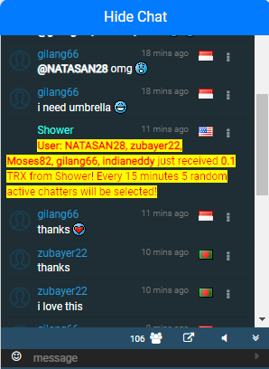

Chat System with TRX Reward
Engage with the community and earn cryptocurrency rewards through our chat system! By being active in the chat, you can receive 0.1 TRX as a reward. Here’s how it works:
1. What is the Chat System?
- Community Interaction: Our chat system allows you to engage with other users, ask questions, and share insights.
- Earn TRX Rewards: To encourage active participation, users who send at least 2 messages in the last 5 minutes can be randomly selected to receive 0.1 TRX.
2. How to Participate
Participating in the chat is simple. Follow these steps to be eligible for TRX rewards:
- Step 1: Log in to your account and join the chat room.
- Step 2: Send at least 2 meaningful messages within a 5-minute window.
- Step 3: Every 15 minutes, the system will randomly select 5 users who have sent at least 2 messages to receive 0.1 TRX each.
3. Reward Distribution
Once selected, the 0.1 TRX reward will be automatically credited to your balance. Here’s how the process works:
- Random Selection: Every 15 minutes, the system checks for users who have been active in the chat and selects 5 random participants.
- Automatic Credit: If you’re selected, the 0.1 TRX will be automatically credited to your balance.
- Real-Time Updates: Your TRX balance is updated in real-time, and you can withdraw the amount or use it for staking.

4. Supported Cryptocurrency
The chat system rewards are distributed in TRX (Tron). You can accumulate these rewards through active participation and use them in various ways on the platform.
5. How to Withdraw TRX
You can withdraw your earned TRX rewards instantly to your FaucetPay account. Here’s how:
- Step 1: Go to the Withdraw Section in your dashboard.
- Step 2: Select TRX as the withdrawal currency.
- Step 3: Enter the amount of TRX you want to withdraw and submit the request. The funds will be instantly sent to your registered FaucetPay email address.
6. Example Scenario
Here’s an example of how the chat system rewards work:
- You send at least 2 messages in the chat within a 5-minute period.
- After 15 minutes, the system randomly selects 5 users from those who have been active.
- If you’re selected, 0.1 TRX is automatically credited to your account.
- You can either withdraw the TRX or use it for staking to earn even more rewards.
7. Important Rules
- Minimum Messages: You must send at least 2 messages within a 5-minute window to be eligible for the TRX reward.
- Random Selection: The system selects users randomly every 15 minutes, so staying active increases your chances of being selected.
8. Get Started
Join the chat today, engage with the community, and start earning TRX rewards! Log in now and head to the Chat Section to begin.